【研修生用】
最終更新：2026/6/3
本研修の目的は、『Anchor』を模した簡易的なWebアプリケーションを作成することです。
Anchorとは、De-Lifeが社内開発した、営業向けWebアプリケーションです。Outlookに届いたメールを自動取得し、AWSおよびSnowflake上での加工を経て、Streamlit上での便利なメール検索を実現しています。
研修で作成するアプリでは、Outlookとの連携が手動に置き換えられ、AWSやSnowflake内の構成も非常にシンプルになっています。
AWS・Snowflakeの基礎技術を習得するとともに、スキルシートにも記載可能な実務経験を獲得すること。
SnowPro Core資格保有者【必須】
AWS SAA【推奨】
Snowflake
AWS
その他
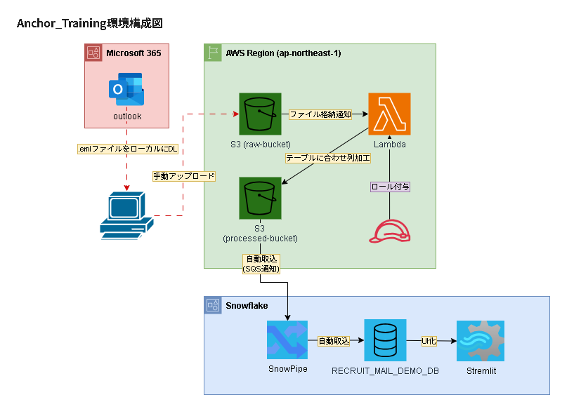
本番Anchorでは、Microsoft Graph APIとの連携／AWS ECSによるDocker環境の採用により、完全自動化されたプログラムを実現しています。
本研修で作成されるプログラムは、 Microsoft Graph API→S3への手動アップロード、AWS ECS→AWS Lambdaへと置き換え、ユーザーが明示的な操作を行った場合にのみ動作する仕組みとなっています。
複数のサービスを組み合わせて成り立つアプリケーションになるので、「今はどんな目的で、何の実装をしているのか？」を常に考えながら研修に臨むようにしてください。
※全５日の課程を想定。
GitHubおよび HCP Terraformのアカウント登録を行う。
Teams（チャネル?）にて、研修アカウントの払い出し申請を行う。
その際、HCP TerraformとGitHubのアカウント情報を添付すること。
（HCP：メールアドレス）
当該アカウントで各サービスにログインできることを確認する。
DLリンク： https://git-scm.com/downloads/win
インストーラーを実行し、デフォルト設定のままインストール。本書内ではBashでコマンドを記載していますので、「Git Bash Here」オプションを有効にしておくことを推奨します。
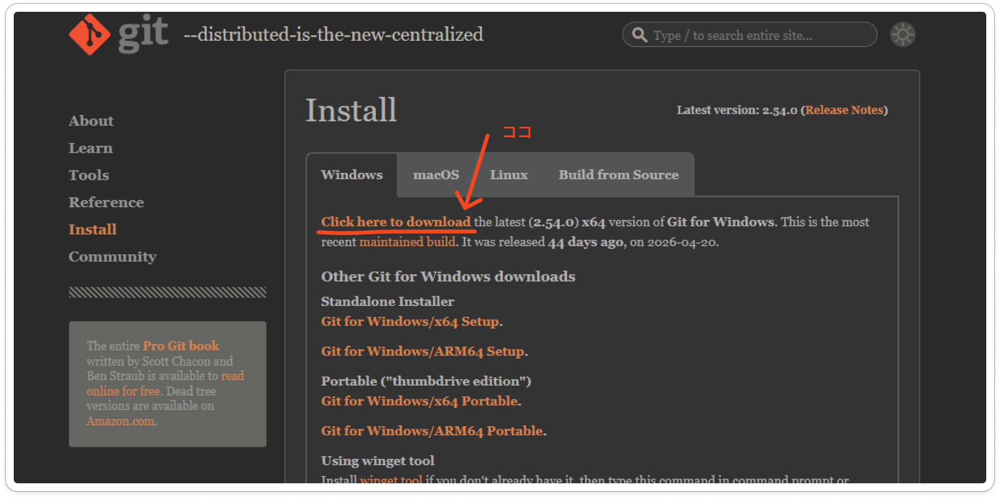
# インストール確認：
git --version
赤字のエラーが表示されたら、インストールできていないか環境変数が未設定です。
→ 環境変数について（link）
DLリンク： https://code.visualstudio.com/
インストーラーを実行し、デフォルト設定のままインストール。
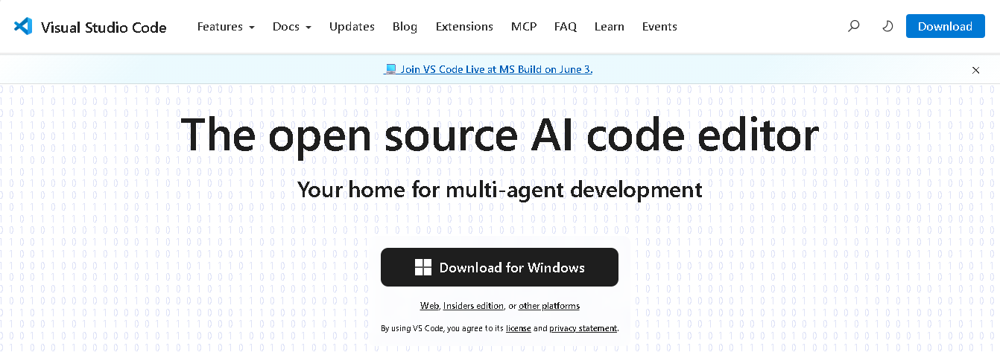
VSCodeを起動し、以下の手順で導入：
左サイドバー > 拡張機能アイコン > 検索欄に「HashiCorp Terraform」と入力 > インストール > 有効化
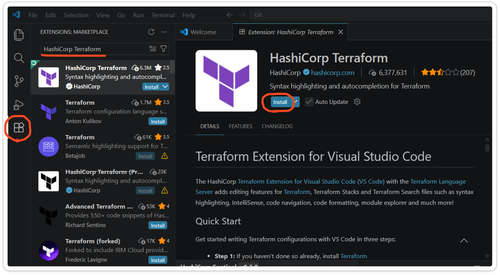
DLリンク： https://developer.hashicorp.com/terraform/install
Windows用のzipファイルをダウンロード
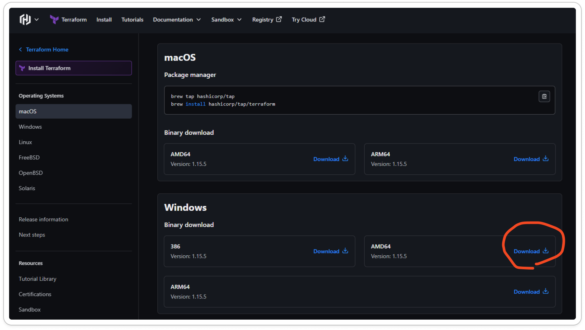
zipを解凍し terraform.exe を取り出す
任意のフォルダ（例：C:\terraform）に配置
環境変数のPathに追加
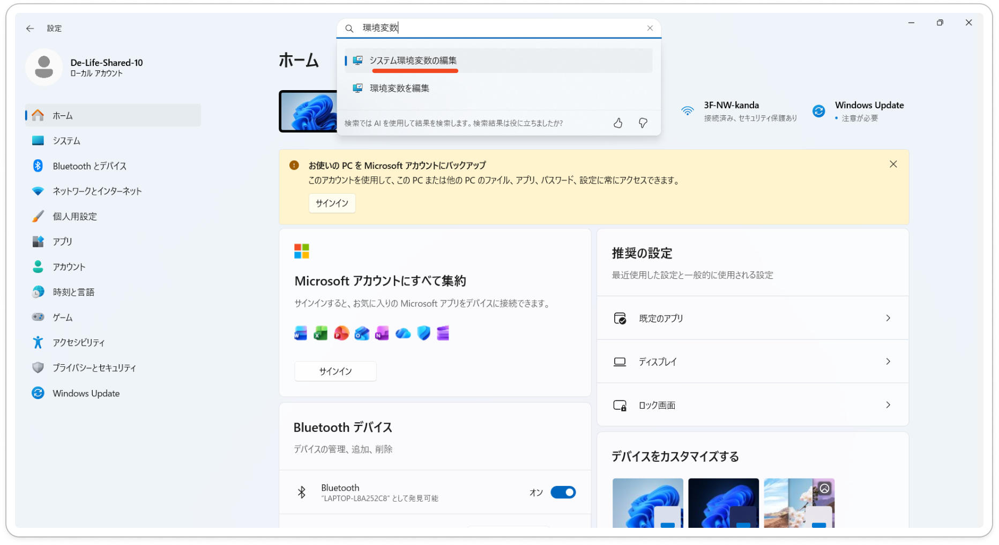
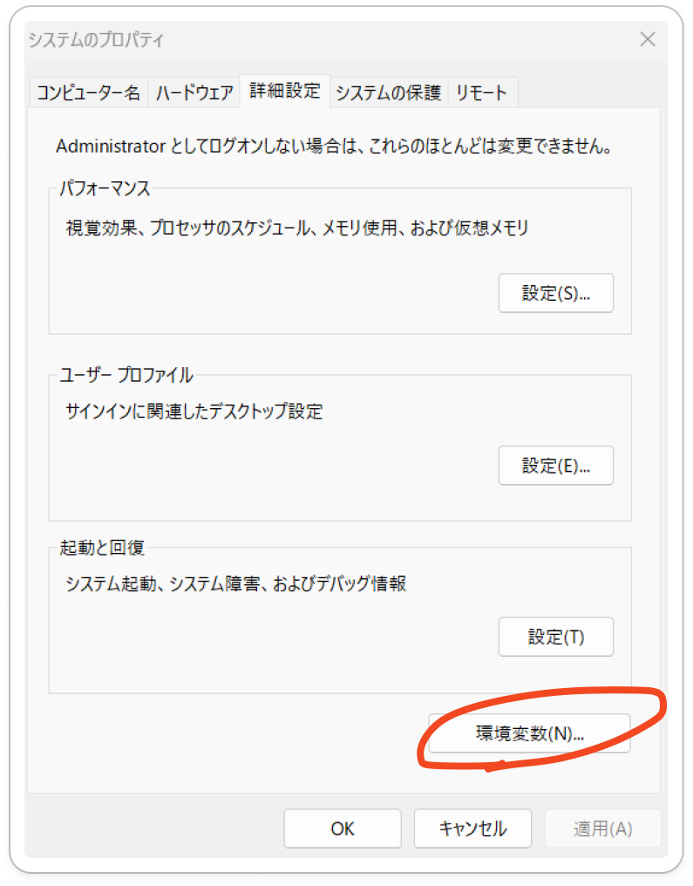
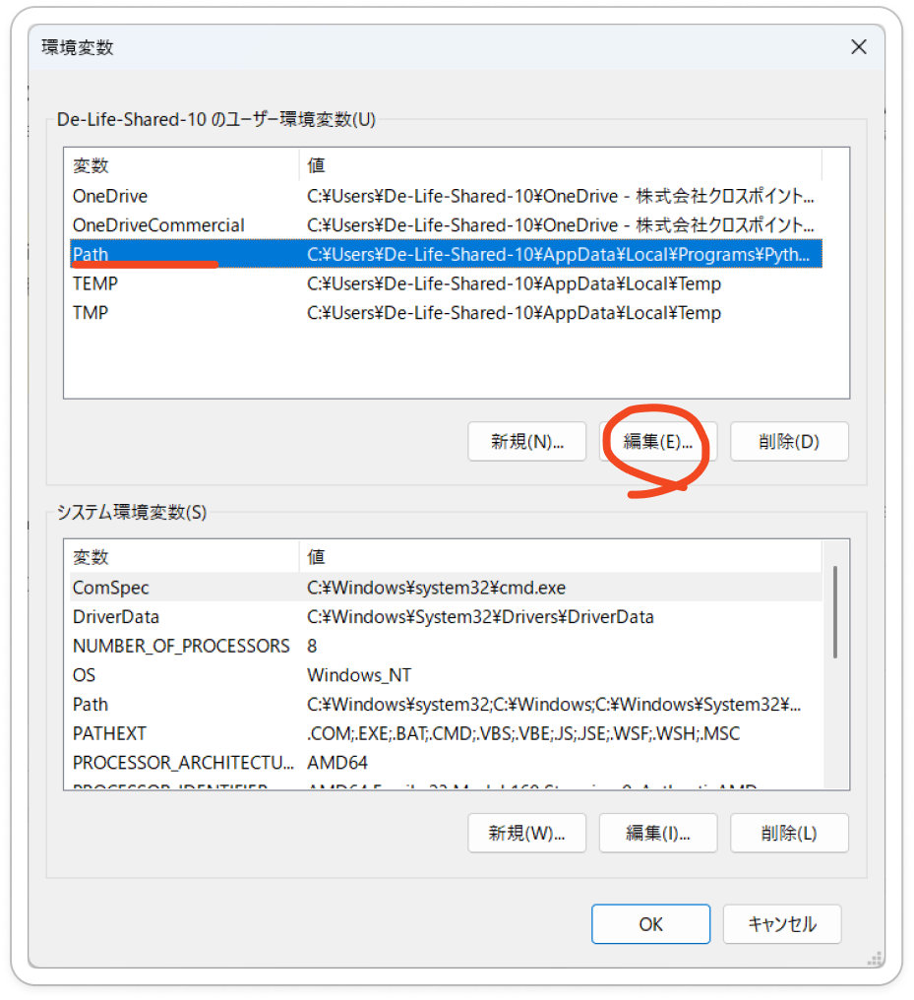
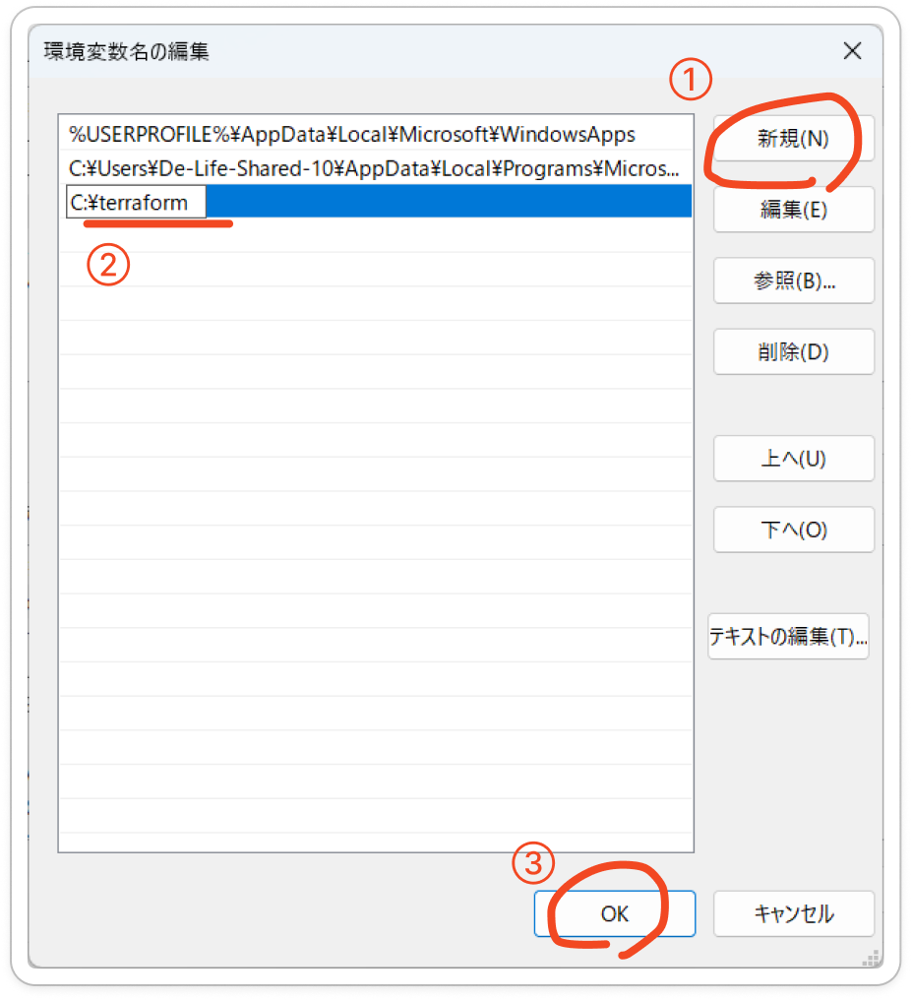
参考【環境変数について】：https://qiita.com/x-rot/items/7a4ecab94f124f89f715
# インストール確認：
terraform --version
DLリンク： https://www.python.org/downloads/windows/
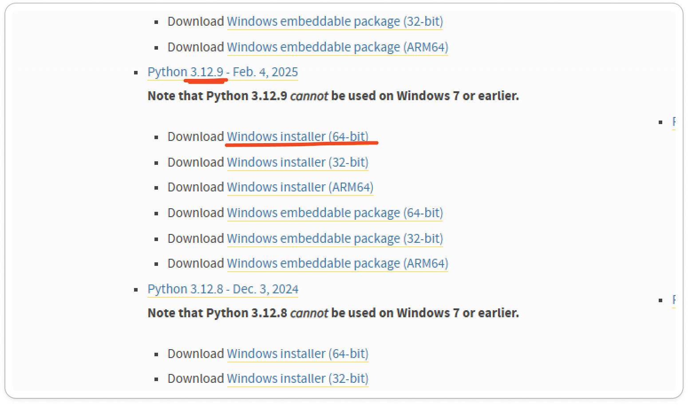
インストーラーを実行。インストール時に以下を必ず有効化すること：
☑ Add Python to PATH\
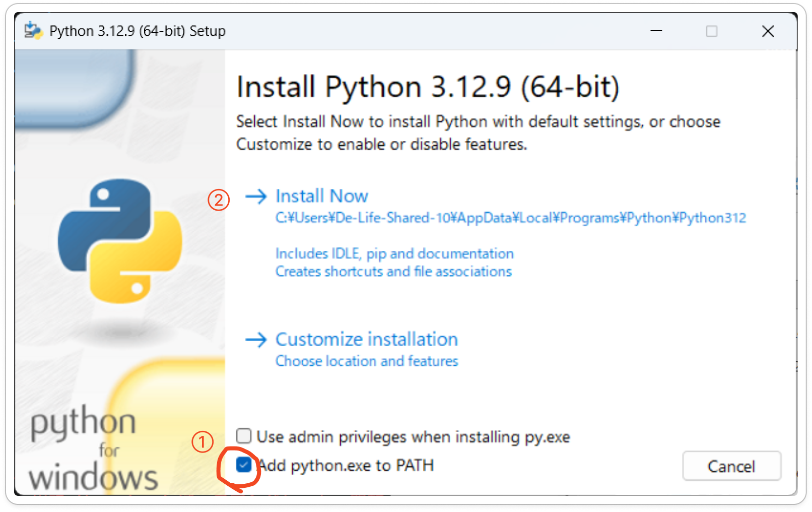
# インストール確認：
python --version
# 必要パッケージのインストール：
pip install cryptography
pip install dbt-snowflake
# dbtインストール確認：
dbt --version
・各ツールのインストール後はターミナルを再起動してから動作確認すること
・Python 3.14はdbt-snowflakeに非対応のため必ず3.12を使用すること
・Pathの設定が反映されない場合はPCを再起動すること
担当管理者から口頭で研修の説明を受けます。ここでは要点のみ列記します。
研修の手順は以下の通りです。
章単位で課題をクリアし、成果物を指定のフォルダにアップロードすること。
成果物のファイル名は「（氏名）_（章番号）成果物」とすること。
成果物のアップロードの報告義務は無い。ただし、全過程をクリアした際は、Teamsにて報告すること。
研修中の連絡は、以下の通りです。
研修上の注意点
秘密鍵の取り扱い（GitHub、HCP Terraform）
Git関連
利用ブランチはdevelop-feature/<name>
mainへのpushは不可
この章から、実際の研修がスタートします。
各章は＜手順概要＞＜課題＞＜解説＞の3節で構成されています。
＜手順概要＞を読んでから＜課題＞に取り組み、できあがった成果物を指定のフォルダに格納してください。課題を終えたら、＜解説＞を確認して理解を深めましょう。
知らない概念やわからない言葉が出てきたら、『Snowflake研修リファレンス（作成中）』を参照することをおすすめします。
では、本章の説明に入ります。
本章では、研修プログラムで作成するアプリケーションの構成図を作成します。
構成図の作成にはdraw.ioを使用します。手動で一から作成することもできますが、ここではXMLによる作成手順を紹介します。
こちらから、構成図ガイドライン（.json）をダウンロードします。
ChatGPTやClaudeなどのLLMに、ガイドラインに沿って構成図用XMLを出力するように依頼します。どのような構成図を出力させるかの指示は、自身で考えてください。
出力されたXMLをdraw.ioにペーストします。
必要に応じて、手動で修正を加えます。
概要レクチャーで知り得た情報を基に、本研修で作成するアプリケーションの構成図を作成してください。
構成図例は以下の通りです。
本章では、AWS環境の構築を行います。
今回はCloudFormationを活用し、IaCによるリソース構築を実践します。作成するリソースはIAMロール、S3バケット、Lambda関数です。
この章以降、ダウンロードしたソースコードを編集することになりますが、ソースコードは意図的に不完全な状態になっています。そのまま実行しても正常に動作しないことにご留意ください。
指定されたユーザーで、AWSコンソールにログインします。
S3に格納されたテンプレートをダウンロードします。同テンプレートは不完全な状態になっているので、ローカルで編集を実施します。
完成版のテンプレートを、任意のファイル名を変更した上で同フォルダに配置します。
当該テンプレートを指定して、CloudFormationでスタックを実行します。なお、スタック名は『<ユーザー名>-pipeline』としてください。
作成されたバケット『<ユーザー名>-bucket』の配下に、『raw_emails/』および『messages/』フォルダを作成してください。
生成されたリソースが意図通り機能するか、試験します。
①CloudFormationを用いて、以下の要件を満たすようにAWSリソースを作成してください。
■要件
『<ユーザー名>-bucket』という名称のバケットを作成する。
同バケットに対して、作成者および以下に列挙する管理者が、任意の操作が可能である。
'arn:aws:iam::875180007397:user/SHINJI_KUROSAKI'
'arn:aws:iam::875180007397:user/TAKUYA_INOUE'
'arn:aws:iam::875180007397:user/CHIHIRO_SHIRASAKA'
'arn:aws:iam::875180007397:user/TAIGA_ISHII'
■テンプレート格納場所
trainee/
②Lambda関数が正常に機能するか、試験してください。『messages/』フォルダに加工済み.jsonlファイルが格納されていれば成功です。
ユーザー名
バケット名
バケットポリシーのPrincipal
本章では、HCP Terraformの環境構築を実施します。
HCP Terraformは、クラウドベースのTerraform実行環境です。環境変数の管理や、CI/CDパイプラインとの連携が可能です。
本アプリケーション中のTerraformは、HCP Terraform上で動作します。
なお、dbt用のワークスペースも必要ですが、そちらは管理者側で用意したものを共用します。
事前に作成したアカウントで、HCP Terraformにログインします。
組織「snowflake-training」内でworkspaceを作成します。workspace名は任意です。
必要な環境変数を登録します。
①
任意の名称でworkspaceを作成してください。種類はAPI-Driven Workflowを選択してください。
また、「training」というタグを付与してください。valueの設定は不要です。
②新規作成したworkspaceに、以下の環境変数を登録してください。表中の「?」となっている箇所は、自身で特定してください。
なお、シークレットキーの値はこちらを参照してください。シークレットキーは、必ずsensitive設定を行ってください。
また、 Terraformに使用させるユーザーは、Snowsight上でユーザ一覧を確認し、最も適当と思われるユーザーを選択するようにしてください。
| Key | Value | Category |
|---|---|---|
| snowflake_private_key | ? | terraform |
| ? | AW97878 | env |
| ? | OYTTYGU | env |
| TF_VAR_snowflake_role | SYSADMIN | env |
| TF_VAR_snowflake_user | ? | env |
| TF_VAR_snowflake_warehouse | SNOWFLAKE_LEARNING_WH | env |
| TF_VAR_trainee_name | （任意） | env |
| TF_VAR_s3_bucket_url | s3://anchor-demo-mybucket/messages/ | env |
| TF_VAR_snowflake_aws_role_arn | arn:aws:iam::160621358952:role/snowflake_demo_role | env |
| TF_VAR_snowflake_role_name | FR_ANCHOR_DEMO_ROLE | env |
②Terraform変数と環境変数の違いを説明してください。
①
今回設定している変数は、Snowflakeのアカウント情報および認証情報です。
ソースコードのmain.tf内で定義されている変数名を参照すれば、Keyが特定できます。
ただし、環境変数の場合は「TF_VAR_」というプレフィックスの付与が必要です。
また、Terraformに使わせるユーザーは、 SVC_TERRAFORMです。
| Key | Value | Category |
|---|---|---|
| snowflake_private*_*key | （省略） | terraform |
| TF_VAR_snowflake_account_name | AW97878 | env |
| TF_VAR_snowflake_organization_name | OYTTYGU | env |
| TF_VAR_snowflake_role | SYSADMIN | env |
| TF_VAR_snowflake_user | SVC_TERRAFORM | env |
| TF_VAR_snowflake_warehouse | SNOWFLAKE_LEARNING_WH | env |
| TF_VAR_trainee_name | （任意） | env |
②
Terraform変数はコード内の変数の解決、環境変数は実行環境に渡す変数（認証情報など）という使い分けが一般的です。
ただし、「TF_VAR_」というプレフィックスを付与することで、環境変数もコード内変数として扱うことができます。
また、環境変数の値には改行を含むことができないという制約があります。そのため今回は秘密鍵のみTerraform変数として定義しています。
本章では、GitHubの環境構築を実施します。
本アプリケーションにおいては、CI/CDパイプラインの中核、およびdbtの実行環境として機能します。
①自身のユーザー名と同名のEnvironmentsを作成し、以下の環境変数を登録してください。表中の「?」となっている箇所は、自身で特定してください。
| Name | Value |
|---|---|
| HCP_WORKSPACE_ID | ? |
| TF_WORKSPACE | ? |
②Environmentsに登録した変数には、HCP Terrafomの認証情報が含まれていません。なぜGitHubがHCPに登録されている変数を参照できるのか、説明してください。
③developブランチの直下に、『feature-<名前>』という名称でブランチを作成してください。以降、特別の断りがない限り、当該のブランチにて作業を行います。
④README.mdを任意の内容に書き換え、変更内容をリモートにプッシュしてください。
①
2つの変数は、HCP Terraformのワークスペースを参照するためのものです。
ワークフロー定義ファイル「ci_cd.yml」を見ると、HCP_WORKSPACE_IDは、dbt処理ステップ中で使用されていることがわかります。
よって、dbt-workspaceのID：ws-wSwSw3TQ4Ni93Rjvを入力するのが正しいです。
一方でTF_WORKSPACEはTerraform処理ステップ中で使用されています。
よって、前章にて自身で作成いただいたworkspaceの情報を入力するのが正解です。なお、入力するのはIDではなくワークスペース名となります。
②
HCP Terraformの認証情報は、HCP_API_TOKENという形で、Secrets And Variables > Actions内で登録されています。
リポジトリ単位で管理されている変数と、環境単位で管理されている変数があることに留意してください。
本章では、Snowflake上にオブジェクトを作成することを目指します。
前章までと同様、ローカルでソースコードを編集した後、リモートにpushしてCI/CDパイプラインを実行してください。
ローカルにてTerraformソースコードを編集し、リモートにpushします。
CI/CDパイプラインの実行、およびSnowflakeオブジェクトが作成されることを確認します。
①『ci_cd.yml』を編集し、あなたが作業するブランチにpushおよびプルリクエストした際にワークフローが起動するよう、トリガーを変更してください。
②『schema.tf』を編集し、スキーマの名称を正しく設定してください。
③『pipeline.tf』を編集し、パイプラインを定義するSQLクエリを正しく定義してください。
④変更内容をリモートにプッシュし、CI/CDパイプラインを実行してください。その後、Snowflake上で今回定義したオブジェクトが生成されていることを確認してください。
①
②
オブジェクト名一覧を参照すると、スキーマ名は『RAW』『NORMALIZED』であることがわかります。
③
正しいクエリは以下の通りです。COPYキーワードにはINTOを伴います。各オブジェクトの変数名は、variables.tfを参照すれば確認することができます。
COPY INTO ${snowflake_database.training_db.name}.${snowflake_schema.training_raw.name}.${snowflake_table.mails_raw.name}
FROM @${snowflake_database.training_db.name}.${snowflake_schema.training_raw.name}.${snowflake_stage.st_s3_mail.name}
MATCH_BY_COLUMN_NAME = CASE_INSENSITIVE
本章では、dbtを用いてテーブルデータを加工し、Streamlitアプリケーションで参照するテーブルを作成することを目指します。
ローカルにてdbtソースコードを編集し、リモートにpushします。
CI/CDパイプラインの実行、およびSnowflakeオブジェクトが作成されることを確認します。
S3にメールファイルを手動アップロードし、パイプラインが意図通り機能するか確認してください。
①『dbt_projebt.sql』を編集し、以下の要件を満たすようなテーブルを作成してください。
【要件】
テーブル名はclassify_text_labelである。
列LABEL(文字列型)、DESCRIPTION(文字列型)、SORT_ORDER(整数型)を持つ。
②『mails_normalized.sql』を編集し、MAILS_NORMLIZEDテーブルを適切に定義してください。
②変更内容をリモートにプッシュし、CI/CDパイプラインを実行してください。その後、Snowflake上で今回定義したオブジェクトが生成されていることを確認してください。
④5章で作成した『<ユーザー名>-bucket』の『raw_emails/』フォルダに.emlファイルをアップロードし、 MAILS_NORMALIZEDテーブルに自動反映されることを確認してください。
①
模範解答は以下の通りです。SORT_ORDERの型はintegerを指定するのが適切です。
seeds:
mydbt:
classify_text_labels:
+schema: NORMALIZED
+column_types:
LABEL: varchar
DESCRIPTION: varchar
SORT_ORDER: integer
②
模範解答は以下の通りです。SUBJECTの列名はファイル上部に記載のCTEを参照してください。
FLOAT値であるSENTIMENT関数の戻り値を文字列に変換するには、CASE句で判定するのが適切です。
SELECT
MESSAGE_ID,
SUBJECT,
FROM_EMAIL,
RECEIVED_AT,
TRUE AS AI_PROCESSED,
summary AS AI_SUMMARY,
CASE
WHEN category_raw NOT IN (
SELECT LABEL FROM {{ this.database }}.NORMALIZED.CLASSIFY_TEXT_LABELS
) THEN 'その他'
ELSE category_raw
END AS AI_CATEGORY,
CASE
WHEN sentiment_score > 0.3 THEN 'positive'
WHEN sentiment_score < -0.3 THEN 'negative'
ELSE 'neutral'
END AS AI_SENTIMENT,
keywords AS AI_KEYWORDS,
OBJECT_CONSTRUCT(
'summary', summary,
'category', category_raw,
'sentiment_score', sentiment_score,
'keywords', keywords
) AS AI_RAW_RESULT,
CURRENT_TIMESTAMP() AS NORMALIZED_AT
FROM ai_processed
本章では、既存のStreamlitアプリケーションを複製し、pythonコードの編集によりアプリのビューを編集します。
研修で作成したMAILS_NORMALIZEDテーブルを参照させることがゴールです。
Streamlitアプリケーションを開き、demo_applicationを複製します。
複製したアプリケーションのソースコードを直接編集し、参照先を切り替えます。
①
アプリケーションの参照元を、研修で作成したテーブルMAILS_NORMALIZEDに変更してください。
その後、アプリ上で同テーブルのレコードが表示できることを確認してください。
②
詳細表示中のAI生出力（デバッグ用）ブロックを、非表示にしてください。
①
参照元テーブルは、ソースコードの冒頭で定義されています。
DB_NAMEの値を自身のデータベース名に変更することで、参照元を変更できます。
②
以下のコードブロックをコメントアウトすることで、該当のブロックを非表示にできます。
with st.expander("AI生出力（デバッグ用）", expanded=False):
ai_raw = row.get("AI_RAW_RESULT")
if ai_raw:
try:
parsed = json.loads(str(ai_raw)) if isinstance(ai_raw, str) else ai_raw
st.json(parsed)
except Exception:
st.code(str(ai_raw), language=None)
else:
st.write("（なし）")
準備中
| 種別 | オブジェクト名 | 役割 |
|---|---|---|
| DATABASE | <NAME>_TRAINING_DB | 研修生ごとの専用DB。本番環境と完全分離。 |
| SCHEMA | RAW | S3から取り込んだメールの生データを保持するスキーマ。 |
| SCHEMA | NORMALIZED | 加工・正規化済みデータを保持するスキーマ。 |
| TABLE | RAW.MAILS_RAW | Snowpipeで取り込んだメール生データの格納先。 |
| TABLE | NORMALIZED.MAILS_NORMALIZED | Streamlitの参照元。TASKによる加工済みデータを格納。 |
| INTEGRATION | S3_INT | SnowflakeとS3バケット間のストレージ連携設定。IAMロールと紐づける。 |
| STAGE | RAW.ST_S3_MAIL | S3上のメールJSONLファイルを参照するための外部ステージ。 |
| PIPE | RAW.PIPE_S3_TO_MAILS_RAW | STAGEのファイルをMAILS_RAWへ自動ロードするSnowpipe。 |
| TASK | RAW.T_TRANSFORM_TO_NORMALIZED | MAILS_RAWのデータを加工し、MAILS_PROCESSEDへ書き込む定期タスク。 |
| PROCEDURE | NORMALIZED.SP_AI_SUMMARIZE | Snowflake CortexによるAI要約処理を実行するストアドプロシージャ。 |
| ROLE | FR_ANCHOR_DEMO_ROLE | 研修生に付与する既存ロール。研修DB内の操作権限を管理。 |
| USER | SVC_TERRAFORM | Terraformによるインフラ構築用サービスアカウント。 |
| USER | SVC_DBT | dbtによるクエリ実行用サービスアカウント。 |
| 対象 | 権限 | 用途 |
|---|---|---|
| DATABASE <NAME>_TRAINING_DB | USAGE | DB内オブジェクトへのアクセス基盤 |
| SCHEMA <NAME>_TRAINING_DB.RAW | USAGE | スキーマ内オブジェクトへのアクセス基盤 |
| SCHEMA <NAME>_TRAINING_DB.RAW | MODIFY | スキーマ設定変更 |
| SCHEMA <NAME>_TRAINING_DB.RAW | MONITOR | スキーマ使用状況の確認 |
| SCHEMA <NAME>_TRAINING_DB.RAW | CREATE TABLE | MAILS_RAW作成 |
| SCHEMA <NAME>_TRAINING_DB.RAW | CREATE STAGE | ST_S3_MAIL作成 |
| SCHEMA <NAME>_TRAINING_DB.RAW | CREATE PIPE | PIPE_S3_TO_MAILS_RAW作成 |
| SCHEMA <NAME>_TRAINING_DB.RAW | CREATE TASK | T_TRANSFORM_TO_NORMALIZED作成 |
| SCHEMA <NAME>_TRAINING_DB.RAW | CREATE FILE FORMAT | ファイルフォーマット定義 |
| SCHEMA <NAME>_TRAINING_DB.RAW | CREATE STREAM | ストリーム作成 |
| SCHEMA <NAME>_TRAINING_DB.RAW | CREATE VIEW | ビュー作成 |
| SCHEMA <NAME>_TRAINING_DB.NORMALIZED | USAGE | スキーマ内オブジェクトへのアクセス基盤 |
| SCHEMA <NAME>_TRAINING_DB.NORMALIZED | MODIFY | スキーマ設定変更 |
| SCHEMA <NAME>_TRAINING_DB.NORMALIZED | MONITOR | スキーマ使用状況の確認 |
| SCHEMA <NAME>_TRAINING_DB.NORMALIZED | CREATE TABLE | MAILS_PROCESSED作成 |
| SCHEMA <NAME>_TRAINING_DB.NORMALIZED | CREATE PROCEDURE | SP_AI_SUMMARIZE作成 |
| SCHEMA <NAME>_TRAINING_DB.NORMALIZED | CREATE VIEW | ビュー作成 |
| SCHEMA <NAME>_TRAINING_DB.NORMALIZED | CREATE STREAMLIT | Streamlitアプリ作成 |
| SCHEMA <NAME>_TRAINING_DB.NORMALIZED | CREATE STREAM | ストリーム作成 |
| SCHEMA <NAME>_TRAINING_DB.NORMALIZED | CREATE TASK | タスク作成 |
| WAREHOUSE SNOWFLAKE_LEARNING_WH | USAGE | クエリ実行用ウェアハウスの使用 |
| ACCOUNT | EXECUTE TASK | TASKの実行（アカウントレベル権限） |